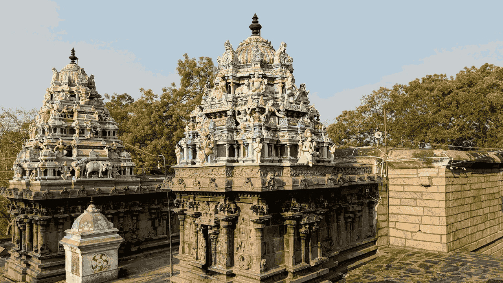

சுத்தம் செய்தல்
கோவில் வளாகம், பிரகாரம், மலைப்பாதை சுத்தம்

ஓம் நமசிவாய
கோவில் வரலாறு
டி.கல்லுப்பட்டிக்கு அருகிலுள்ள தேவங்குறிச்சியில் உள்ள அக்னீஸ்வரன் கோயில் (அக்கினீஷ்வரர் கோயில்), மதுரையிலிருந்து சுமார் 40 கி.மீ தொலைவில் உள்ள ஒரு குறிப்பிடத்தக்க பழங்கால சிவன் கோயிலாகும், இது காசி (வாரணாசி) போன்ற சடங்குகளைச் செய்வதற்கான புனிதத் தலமாக அறியப்படுகிறது.
6,000 ஆண்டுகள் பழமையான மனித வாழ்விடத்திற்கான சான்றுகளைக் கொண்ட இந்த வரலாற்றுச் சிறப்புமிக்க பகுதியில், ஆன்மீக மலையில் உள்ள கோயில் உள்ளது, இது ஆன்மீக ஆறுதலுக்காக பல பக்தர்களை ஈர்க்கிறது, இது மதுரை மாவட்டத்தில் ஒரு முக்கிய யாத்திரைத் தலமாக அமைகிறது.

உழவார பணியின் முக்கிய நோக்கம்
2000 ஆண்டு பழைமையான சிவன் கோவில் சுத்தம் செய்வது, அழகுபடுத்துவது, பாதுகாப்பது, தோட்டம், பூங்கா அமைத்தல், கிரிவல பாதையில் இருபுறமும் மரங்கள் வளர்த்தல் என்பதே உழவார பணியின் முக்கிய நோக்கம்.
கோவில் வளாகம், பிரகாரம், மலைப்பாதை சுத்தம்
கோவிலின் பொலிவை மீட்டெடுத்தல்
பழமையான கோவிலை பேணிக் காத்தல்
கோவிலைச் சுற்றி நந்தவனம் அமைத்தல்
இருபுறமும் மரங்கள் வளர்த்தல்
நிழற்படத் தொகுப்பு
பணி நிகழ்வுகள்
AI கற்பனை வடிவம்
AI காணொளிகள்
வழி
அக்கினீஸ்வரர் ஆலயம்
தேவன்குறிச்சி மலை, டி.கல்லுப்பட்டி அருகில்,
மதுரை மாவட்டம், தமிழ்நாடு
மதுரையிலிருந்து சுமார் 40 கி.மீ
🧭 Google Maps-ல் வழி காணLinks
🙏
தேவன்குறிச்சி கிரிவலத்திற்கு அனைவரும் வருகை தாருங்கள் 🙏